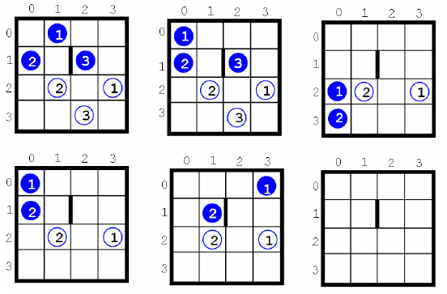

World Finals - Tokyo - 2006/2007
| 3807 - Marble Game World Finals - Tokyo - 2006/2007 | ||||
| Submit | Ranking | ||||
A Marble Game is played with M
A game board may contain walls. Each wall is one unit long and stands between two adjacent unit squares. Two squares are considered adjacent if and only if they share a side.
At the beginning of the game, all marbles are placed on the board, each in a different square. A ``move" consists of slightly lifting a side of the game board. Then all marbles on the board roll downward toward the opposite side, each one rolling until it meets a wall or drops into an empty hole, or until the next square is already occupied by another marble. Marbles roll subject to the following restrictions:
The game is over when each marble has dropped into a hole with the corresponding number.
The figure below illustrates a solution for a game played on a
4×4
Your program should determine the fewest number of moves to drop all the marbles into the correct holes -- if such a move sequence is possible.
The input file contains several test cases. The first line of each test case contains three numbers: the size N
The input file ends with a line containing three zeroes.
For each test case, print the case number (beginning with 1) and the minimal number of moves to win the game. If the game cannot be won, print the word ``impossible". Put a blank line after each test case. Use the format of the sample output below.
Tests-Setter: Derek Kisman

Input
 N
N 4)
4)
Output
Sample Input
4 3 1
0 1
1 0
1 2
2 3
2 1
3 2
1 1 1 2
3 2 2
0 0
0 1
0 2
2 0
2 0 1 0
2 0 2 1
0 0 0
Sample Output
Case 1: 5 moves
Case 2: impossible
Tokyo 2006-2007